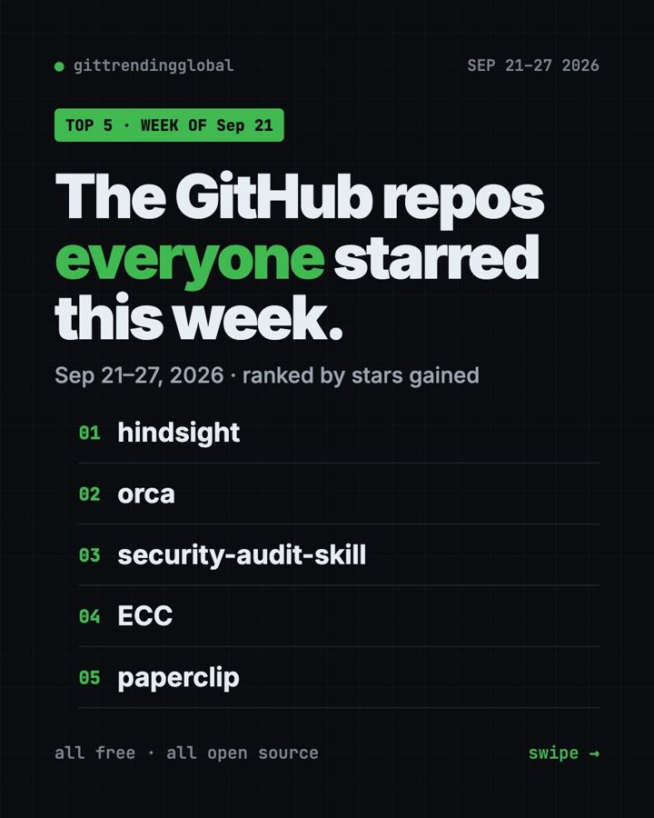
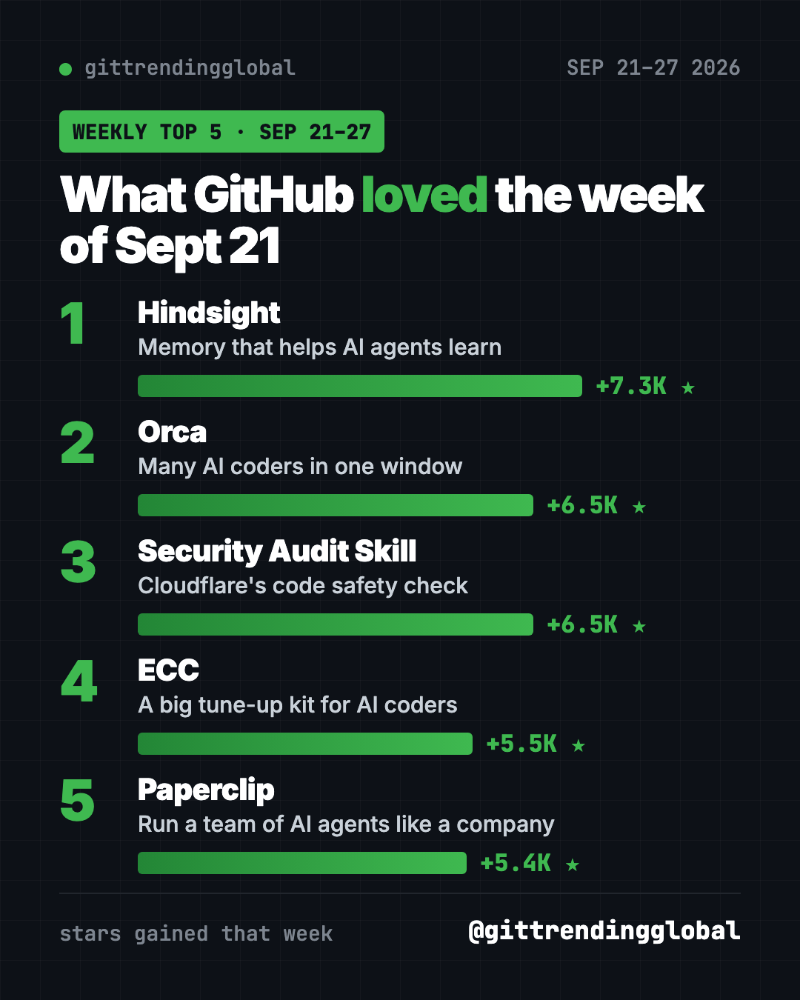
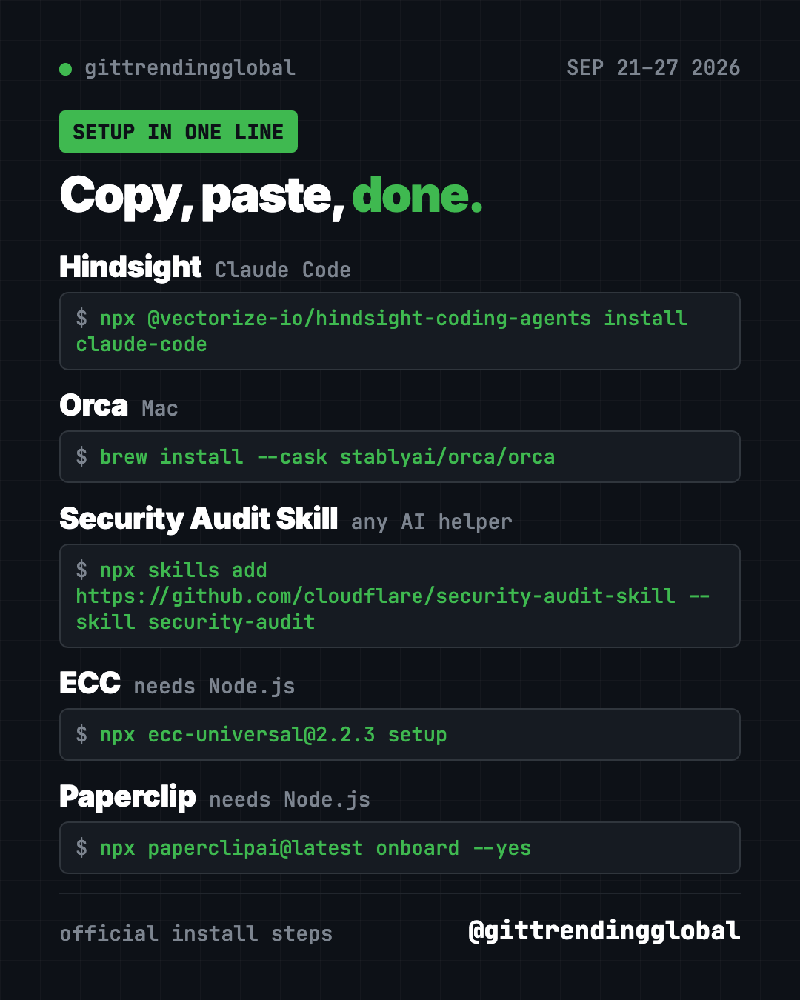

Home › Top repos › GitHub trending this week
Trending GitHub Repos Sept 21, 2026: AI Memory and Safety
Trending GitHub repos Sept 21 2026: Hindsight AI memory, Orca, Cloudflare's security audit skill, ECC and Paperclip, explained for non-coders.

Trending GitHub repos Sept 21 2026 came down to one theme: making AI agents smarter and safer. Hindsight, a memory system that helps AI agents learn from experience, led with +7.3K stars. Orca and Cloudflare's new security skill tied for second at +6.5K each.
It was a close race this week, with all five repos between +5.4K and +7.3K. Here's what each one does and the fastest way to try it.
Key takeaways
- Hindsight won Sep 21 to 27 with +7.3K stars. It gives AI helpers a memory that builds up over time.
- Cloudflare's Security Audit Skill turns your AI helper into a careful security checker for your code.
- Orca and ECC stayed on the chart from earlier weeks.
- Paperclip lets you run a team of AI agents like a small company, with budgets.

Trending GitHub repos Sept 21 2026 in one table
| Repo | What it does | Best for | Free? | Setup |
|---|---|---|---|---|
| Hindsight | Long-term memory for AI agents | Heavy AI helper users | Yes (MIT) | One command |
| Orca | Many AI coders side by side | Daily AI coders | Yes (MIT) | Download the app |
| Security Audit Skill | AI security check for your code | Anyone shipping an app | Yes (MIT) | One command |
| ECC | Skills and rules for AI coders | Claude Code power users | Yes (MIT) | Guided setup |
| Paperclip | Manage a team of AI agents | Solo founders, small teams | Yes (MIT) | One command |
Star gains cover Sep 21 to 27, 2026. Totals were checked on GitHub on October 16, 2026.
1. Hindsight: AI memory that learns
Stars: +7.3K this week · about 50.0K total
What it is: A memory system from Vectorize. Most chatbots forget you the moment a chat ends. Hindsight saves what matters, finds it later and thinks it over, so your AI gets better at helping you over time. It works with Claude Code, Codex, Cursor and many other tools.
Who it's for: People who use an AI helper on the same projects every day.
Everyday use: Your AI remembers that you prefer short answers and that your site uses blue buttons, without you repeating it.
Install it: For Claude Code, copy and paste this:
npx @vectorize-io/hindsight-coding-agents install claude-code
Let Claude or Codex do it:
Set up Hindsight from github.com/vectorize-io/hindsight so you remember my projects, and tell me where my memories are stored first.
Our Hindsight guide covers the Docker setup too.
2. Orca: a control room for AI coders
Stars: +6.5K this week · about 93.3K total
What it is: A desktop app that runs Codex, Claude Code, OpenCode or Pi side by side. Each works in its own copy of your project. A phone app lets you check on them from anywhere. It was also on the list the week before.
Who it's for: People who hand AI several tasks at once.
Everyday use: Let one agent fix a bug while another writes a new page.
Install it: Download it from onorca.dev, or on a Mac copy and paste this:
brew install --cask stablyai/orca/orca
Let Claude or Codex do it:
Install Orca from github.com/stablyai/orca and set it up to run Claude Code and Codex on two separate tasks.
3. Security Audit Skill: Cloudflare checks your code for holes
Stars: +6.5K this week · about 29.8K total
What it is: A skill from Cloudflare, the internet security company. It walks your AI helper through a careful audit in phases. A separate AI checker tries to prove each finding wrong, so you get fewer false alarms.
Who it's for: Anyone who built an app with AI and wants to know if it leaks data.
Everyday use: Before launch, ask it to check your sign-up page and payment flow for weak spots.
Install it: Copy and paste this:
npx skills add https://github.com/cloudflare/security-audit-skill --skill security-audit
Then open your AI helper in your project and type security audit this codebase.
Let Claude or Codex do it:
Install Cloudflare's security audit skill from github.com/cloudflare/security-audit-skill, audit this project, and summarize the results in plain words, worst first.
More detail in our Security Audit Skill guide.
See the Security Audit Skill on GitHub

4. ECC: three weeks on the chart
Stars: +5.5K this week · about 280.2K total
What it is: A big kit of skills, memory and security habits for Claude Code, Codex and OpenCode.
Who it's for: Claude Code users who want a ready-made pro setup.
Everyday use: Use its built-in review routines before you share your code.
Install it:
npx ecc-universal@2.2.3 setup
Let Claude or Codex do it:
Install ECC from github.com/affaan-m/ECC with the Global user and Standard choices, explaining each step first.
See our ECC guide.
5. Paperclip: run AI agents like a company
Stars: +5.4K this week · about 102.6K total
What it is: An app for managing a team of AI agents. You set goals, an org chart and budgets. It runs on your own computer, and you can bring Claude Code, Codex, Cursor and others. It can pause work when spending hits your limit.
Who it's for: Solo founders and small teams juggling many AI agents.
Everyday use: Give a "marketing agent" a weekly goal and a $20 budget, then review its work in one dashboard.
Install it: You need Node.js 24.11 or newer. Copy and paste this:
npx paperclipai@latest onboard --yes
Let Claude or Codex do it:
Install Paperclip from github.com/paperclipai/paperclip, open the dashboard, and help me create one goal and one agent with a small budget.
Our Paperclip guide walks through it.
Which one should you try first?
- Your AI keeps forgetting things: install Hindsight.
- You built an app and feel nervous about it: run the Security Audit Skill.
- You run lots of agents: try Paperclip for budgets, or Orca for side-by-side work.
- You want a full power setup: use ECC.
⚠️ Heads up: A full security audit sends many AI helpers through your code. That can use a big chunk of your AI plan, so check your limits first.
💡 Tip: Paperclip's quick install is meant for your own computer. Don't open it to the public internet.
See the whole month in our top 5 GitHub repos of September 2026 and September 2026 in AI. Next: the week of Sept 28.
FAQ
What were the trending GitHub repos Sept 21 2026?
Hindsight (+7.3K stars), Orca (+6.5K), Cloudflare's Security Audit Skill (+6.5K), ECC (+5.5K) and Paperclip (+5.4K).
Is Cloudflare's security audit skill free?
Yes. It's free and open source under MIT. It runs inside your own AI helper, which uses your plan's credits.
What does AI agent memory mean?
It means the AI keeps useful facts between chats, like your preferences or project rules, so you don't repeat yourself.
Do I need an account for Paperclip?
No. The README says no Paperclip account is required. It runs on your computer.
Want one new free tool explained every day? Follow @gittrendingglobal on Instagram.
Keep reading

Trending GitHub Repos October 2026: The Top 5 So Far
The trending GitHub repos of October 2026 so far: a free Photoshop-style editor, an AI art studio, a big AI model for gaming PCs and more, explained.

Trending GitHub Repos This Week, Oct 5 2026: The Top 5
Trending GitHub repos this week Oct 5 2026: Matt Pocock's skills, the openGym workout tracker, e2e testing, HyperFrames video and claude-mem memory.

GitHub Trending September 28, 2026: Hindsight and Paperclip
GitHub trending September 28 2026: Hindsight, Paperclip, NVIDIA's OpenShell and a free 542-lesson AI course, with setup steps for each.